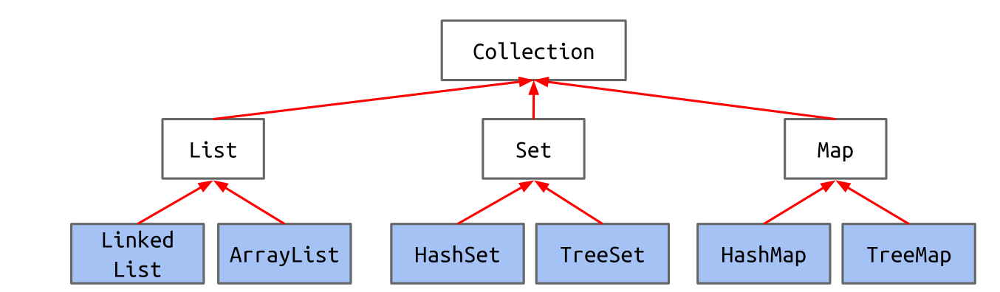
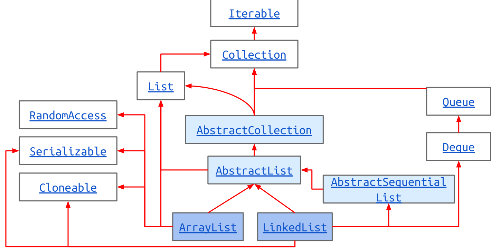
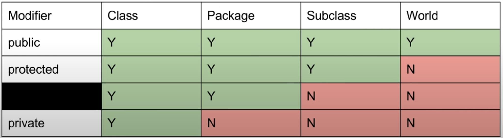

Walrus a = new Walrus(1000, 8.3);string不属于原始类型（byte, short, int, long, float, double, boolean, char）其余都被称为reference type
在java中对象的变量是指针 对象声明时开辟64bit空间存储地址 需要用new来为对象的实际内容开辟空间 复制对象即复制指针
对象并不是引用传递 而是按值传递引用 创建了一个新的指针指向同一块内存，在c中出现的swap指针函数在java中无法达到目的
原始类型按值传递
public class SLList {
private static class IntNode {
public int item;
public IntNode next;
public IntNode(int i, IntNode n) {
item = i;
next = n;
}
}
private IntNode sentinel;
private int size;
public SLList() {
sentinel = new IntNode(-1, null);
size = 0;
}
public SLList(int x) {
size = 1;
sentinel = new IntNode(-1, null);
sentinel.next = new IntNode(x, null);
}
public void addFirst(int x) {
size += 1;
sentinel.next = new IntNode(x, sentinel.next);
}
public void addLast(int x) {
size += 1;
IntNode p = sentinel;
while (p.next != null) {
p = p.next;
}
p.next = new IntNode(x, null);
}
}不需要被外部类访问所以使用private 不需要访问SLList的实例 所以使用static
public class SLList<BleepBlorp>{...}
DLList<Double> s1 = new DLList<>(5.3);final
对于变量，表示其不会再变成引用别的变量，但是引用的对象内容可以修改
对于类，表示其不能被继承
对于方法，表示不能被覆盖
返回对象
返回可变对象的引用，应该先克隆 return (Date) hireDay.clone();
显式字段初始化
可以直接在类定义中为字段赋值
class Employee{
private static int nextId;
private int id = assignId();
private static int assignId(){
int r = nextId;
nextId++;
return r;
}
}this/super
构造函数中调用其他构造函数 必须在最前面
表示该对象或父类
静态导入
import static java.lang.System.*不止导入所有类，还导入静态方法和字段（可以省略System.out中的System）
数组类型转换
Manager[] managers = new Manager[10];
Employee[] staff = managers; // ok
staff[0] = new Employee();
managers[0].setBonus() //???Generic
| 原始类型 | 引用类型 |
|---|---|
| int | Integer |
| double | Double |
| char | Character |
| boolean | Boolean |
| long | Long |
| byte | Byte |
| short | Short |
| float | Float |
Array 引用
int[] x = new int[3];
int[] y = new int[]{1, 2, 3, 4, 5};
int[] z = {9, 10, 11, 12, 13};
int l = z.length;
System.arraycopy(b, 0, x, 3, 2);原array，原array的复制起始位置，目标array，目标array的黏贴起始位置，复制数量
int[][] pascalsTriangle = new int[4][];
pascalsTriangle[0] = new int[]{1};
pascalsTriangle[1] = new int[]{1, 1};
pascalsTriangle[2] = new int[]{1, 2, 1};
pascalsTriangle[3] = new int[]{1, 3, 3, 1};
int[] rowTwo = pascalsTriangle[2];
rowTwo[1] = -5;
int[][] matrix;
matrix = new int[4][];//Create 1 array
matrix = new int[4][4];//Create 5 arrays
int[][] pascalAgain = new int[][]{{1}, {1, 1},
{1, 2, 1}, {1, 3, 3, 1}};
public class AList<Glorp> {
private Glorp[] items;
private int size;
public AList() {
items = (Glorp []) new Object[8];
size = 0;
}
}由于泛型数组存储的是对象的引用，要确实地删除对象地引用，保证不loiter 浪费内存
public Glorp deleteBack() {
Glorp returnItem = getBack();
items[size - 1] = null;
size -= 1;
return returnItem;
}sllist和alist都应属于list，定义接口，接口规定要实现的内容
public interface List61B<Item> {
void addFirst(Item x);
default public void print() {
for (int i = 0; i < size(); i += 1) {
System.out.print(get(i) + " ");
}
System.out.println();
}
}
public class AList<Item> implements List61B<Item>{...}interface可以存变量，但变量是public static final不能改变
对于继承方法，函数参数与接口定义完全相同为override，不同为overload
返回类型override
允许子类将override方法的返回类型改为原返回类型的子类型
可选：在override的方法前标注@Override，若方法并不是override则不编译
上面的print()方法在SLList应当override
要使类继承另一个类，使用extend关键字
public class RotatingSLList<Blorp> extends SLList<Blorp>{
public void rotateRight() {
Blorp oldBack = removeLast();
insertFront(oldBack);
}
}public class VengefulSLList<Item> extends SLList<Item> {
private SLList<Item> deletedItems;
public VengefulSLList() {
super();
deletedItems = new SLList<Item>();
}
@Override
public Item removeLast() {
Item oldBack = super.removeLast();
deletedItems.addLast(oldBack);
return oldBack;
}
public void printLostItems() {
deletedItems.print();
}
}java中 变量是静态绑定的，方法（除static）是静态绑定的
java中有变量同时拥有有动态类型和静态类型，静态类型不能改变，是声明时的类型，动态类型可以在赋值中改变。
foo.bar(x1)编译器会记录foo的静态类型对x1的静态类型的对应函数。如果foo的动态类型overridebar方法，会执行动态类型对应的，否则执行记录的。
编译器类型检查根据静态类型，将父类赋给子类等行为会导致编译失败
判断赋值能不能通过编译，可以通过判断是否满足右边is a左边
强制类型转换
if (staff instanceof Manager){
boss = (Manager) staff;
}
String C = (String) staff;在继承链自下而上强制转换时会产生ClassCastException，如果更加错的离谱的会编译错误
cast 不会造成改变 只是对编译器的
抽象类
可包括抽象方法，字段和具体方法
抽象方法是没有被实现的
不能创建抽象类的对象，但是可以有抽象类的对象变量引用到他的具体子类对象
自定义比较的实现思路
Comparable是内建的类，已经对一些自带的类实现比较
实现比较的类（如Dog）implements Comparable<Dog>中的compareTo(Dog)方法
调用方调用继承了Comparable接口的对象
import java.util.Comparator;Comparator实现各种不同标准的比较
实现比较的类（如Dog）中嵌套类NameComparator（static）implementsComparator<Dog>实现compare(Dog,Dog)方法
将嵌套类设为private，在类中提供返回comparator的static方法 比较器的类型应由Dog.NameComparator改为Comparator<Dog>
interface提供了实现callback的能力，通过implement comparable只能实现一种比较，而comparator的多态能提供多种比较
comparable将自己与其他比较，comparator将两种作比较
java提供Collection类


package
autoboxing和unboxing
immutable没有“可发现的”方法改变，如Integer,String,Date
generic method在返回类型前加<>
<K extends Comparable<K>>
程序异常时会从调用栈一层层寻找catch，如果没有则程序crash，会打印调用栈
checked异常会使得编译失败
catch那些checked异常或在方法后面声明throws xxException
Iterable Iterator

access control基于static类型
所有object都有toString()方法
==检查是否指向同一，.equals()默认是==
.getClass()